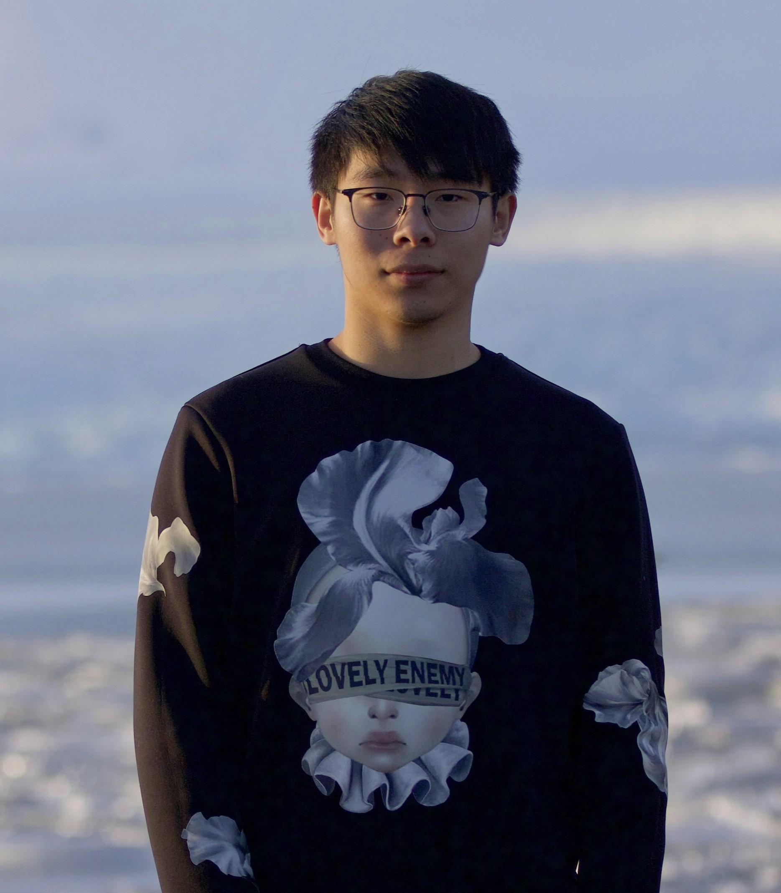

|
 |
Jie Su (苏捷)
Assistant Professor,
Institute of Cyber Security,
Zhejiang University of Technology.
|
|
Office: Room 206, Building C, College of Information Engineering
E-mail: jiesu@zjut.edu.cn
|
News
[10/2024] Our paper "Scan-then-Localize UAV Trajectory Design for Wireless Sensor Localization" is accepted by MSN 2024.
[10/2024] Our paper “On Designing Multi-UAV aided Wireless Powered Dynamic Communication via Hierarchical Deep Reinforcement Learning”is acceppted by IEEE TMC and is online available now.
[5/2025] Website is online!
About me
I am currently a a assistant professor at the Zhejiang University of Technology. Prior to this, I was very fortunate to be advised by Prof. Rajiv Ranjan and Prof. Graham Morgan at Newcastle University. In 2019, he was a research intern at the ITV, working with Marios Perrakis. I obtained my master’s degree with distinction from University of Southampton under the supervision of Pro. Adam Prugel-Bennett.
My research lies at the intersection of signal processing and machine learning with a special focus on building intelligent systems that are continual and data-efficient. My research interests include signal processing, video understanding, and ubiquitous computing.
Education
2018.09-2023.04: Ph.D. in Computer Science, Newcastle University, United Kingdom 2006.09-2009.06: M.S. in Data Science, University of Southampton, United Kingdom 2002.09-2006.06: B.S. in Computer Science, China Jiliang University, China
Working Experiences
Research
Research Interests
Selected Publications
Journals:
Y. Zhou, J. Suo, Y. Wang, J. Su, W. Xiao, Z. Hong, R. Ranjan, L. Wang, Z. Wen, “MMCANet: A Multi-Modal and Cross-Attention Network for Cloud Removal and Exploration of Progressive Remote Sensing Images Restoration Algorithm”, IEEE Transactions on Geoscience and Remote Sensing (TGRS), 2025. [SCI Q1] Z. Hong, X. Li, Z. Wen, L. Zhou, H. Chen, J. Su, “A Source Location Privacy Preservation Method Using Mixed Fake Sources and Phantoms,” IEEE Internet of Things Journal (IOTJ), 2024. J. Su, P. Sun, Y. Jiang, Z. Wen, F. Guo, Y. Wu, Z. Hong, H. Duan, Y. Huang, et al., “A Semantic-Consistent Few-Shot Modulation Recognition Framework for IoT Applications,” IEEE Transactions on Neural Networks and Learning Systems (TNNLS), 2024. [SCI Q1, Top] Z. Hong, M. Chen, R. Wang, M. Yan, D. Zheng, C. Lin, J. Su, M. Han, “Active Learning-Based Backtracking Attack Against Source Location Privacy of Cyber-Physical System,” IEEE Transactions on Emerging Topics in Computational Intelligence, 2024. Z. Wen, Y. Ye, J. Su, T. Li, J. Wan, S. Zheng, Z. Hong, S. He, H. Duan, Y. Li, et al., “Unraveling Complexity: An Exploration into the Large-Scale Multi-Modal Signal Processing,” IEEE Intelligent Systems, 2024. J. Su, Z. Hong, L. Ye, T. Liu, S. Liang, S. Ji, G. S. Aujla, R. Beyah, Z. Wen, “Trustworthy IAP: An Intelligent Applications Profiler to Investigate Vulnerabilities of Consumer Electronic Devices,” IEEE Transactions on Consumer Electronics (TCE), 2023. Z. Wen, J. Suo, J. Su, B. Li, Y. Zhou, “Edge-SAR Assisted Multi-Modal Fusion for Enhanced Cloud Removal,” IEEE Geoscience and Remote Sensing Letters, 2023. Z. Hong, X. Li, Z. Wen, L. Zhou, H. Chen, J. Su, “ESP Spoofing: Covert Acoustic Attack on MEMS Gyroscopes in Vehicles,” IEEE Transactions on Information Forensics and Security (TIFS), 2022. [CCF A] B. Qian, J. Su, Z. Wen, D. N. Jha, Y. Li, Y. Guan, D. Puthal, P. James, R. Yang, et al., “Orchestrating the development lifecycle of machine learning-based IoT applications: A taxonomy and survey,” ACM Computing Surveys (CSUR), 2020. [CCF A]
Conferences:
T. Li, Z. Wen, Y. Jiang, J. Wang, J. Su, Z. Hong, L. Yu, S. He, “Meta-RFF: Few-Shot Open-Set Incremental Learning for RF Fingerprint Recognition via Multi-phase Meta Task Adaptation,” International Conference on Wireless Artificial Intelligent Computing Systems and Applications (WASA), 2024. [Best Paper] P. Zhang, Y. Bai, J. Su, Y. Huang, Y. Long, “Towards Few-shot Image Captioning with Cycle-based Compositional Semantic Enhancement Framework,” International Joint Conference on Neural Networks (IJCNN), 2023. [CCF C] P. Sun, J. Su, Z. Wen, Y. Zhou, Z. Hong, S. Yu, H. Zhou, “Boosting Signal Modulation Few-Shot Learning with Pre-Transformation,” IEEE International Conference on Acoustics, Speech, and Signal Processing (ICASSP), 2023. [CCF B] J. Su, Z. Wen, T. Lin, Y. Guan, “Learning disentangled behaviour patterns for wearable-based human activity recognition,” ACM international joint conference on Pervasive and Ubiquitous Computing (UbiComp), 2022. [CCF A]
Projects and Grants
“Research on multi-dimensional wireless resource allocation and mobility management in UAV-aided wireless powered communication systems for Internet of Things”, Grant No. 62072314, National Natural Science Foundation of China, General Program, 2021.01-2024.12, PI. “Research on wireless powered sustainable cognitive radio communication systems”, Grant No. 61601308, National Natural Science Foundation of China, Youth Program, 2017.01-2019.12, PI. “Research on key technologies of the wireless energy transfer enabled new generation wireless communication systems and their applications”, Grant No. 2017A010101033, Guangdong Provincial Science and Technology Development Special Fund Project, 2017.01-2018.12, Guangdong Provincial Department of Science and Technology,PI.
Teaching
Multimedia Technology and Application, 2020-1 Wireless Sensor Networks, 2016-2, 2018-2, 2019-2,2020-2,2021-2 Digital Circuits: 2021-1, 2022-1, 2023-1, 2024-1 Programming Languages: 2017-1, 2018-1, 2019-1 Intelligent Networks and Computing: 2023-2, 2024-2 Stochastic geometry and Large-Scale Network Analysis: 2021-2, 2022-2, 2023-2
Awards
Overseas High-Caliber Personnel in Shenzhen, 2016 High-level Talent in Nanshan District of Shenzhen,2022 Tencent “Rhino Bird” Shenzhen University Young Faculty Research Fund Project Award, 2017 Outstanding Teacher of Shenzhen University, 2018-2019 Tencent Yiyou Award for Excellent Class Advisor, 2019 College-Level First Prize of the 10th Shenzhen University Young Teacher Lecture Competition, 2021 Research Scholarship Grant, 2009-2013, Nanyang Technological University Outstanding Graduates of University of Electronic Science and Technology of China, 2006 and 2009
|
|